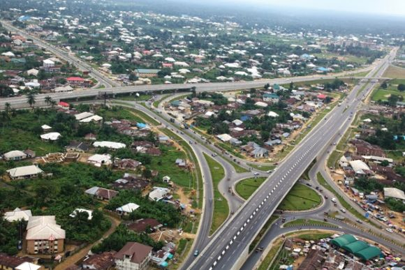

My favorite city is Uyo, Nigeria. Uyo has a reputation as one of Nigeria's cleanest cities, with well-maintained roads, green spaces, and relatively orderly urban planning.The city is known for the hospitality of the predominantly Ibibio people. Compared with larger cities like Lagos or Portharcourt, Uyo has a slower pace of life and less traffic congestion.
